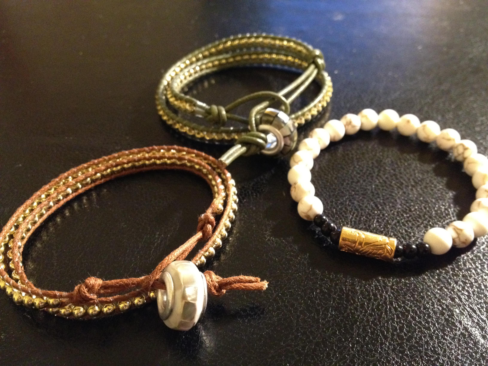

Bracelets in your faces! That’s right, it’s another bracelet attack.
I was inspired this weekend by friends, family and of course, Pinterest to create some new bracelets. I’ve been craving some down time to myself and I thought hitting up Michael’s and making some bracelets were the way to go! I made some new Chan Luu inspired wrap bracelets as well as a milk/black/gold beaded bracelet just for kicks. I followed this tutorial on how to make wrap bracelets.


{kind=link}
Wrap Bracelet Materials:
• Leather cord
• Monofilament
• Small gold beads
• Large closure bead
I made this seahorse bracelet a couple weeks back but haven’t had the chance to post it. My friend Juice and I made these BFF bracelets before she flew off to Vancity (I miss you lots!).
Seahorse Bracelet (simply braided):
• Embroidery thread (Dark Navy, Blue Grey, Rust, Fiery Red)
• Gold chain
• Sea horse charm
• Toggle closure
I also wanted to give a warm thank you to my favourite girls from Helloberry for making me this (super) special edition turquoise bracelet pictured here in my Saturday bracelet stack :) I love it! They’ve got loads of colourful bracelets perfect for spring/summer. I can’t wait to don them out in the open without my winter jacket in the way!
{kind=link}
{kind=link}
Good bye weekend, back to reality. And back into my work out routine (More on that to come!)
Adios mi amigos!
Charlotte
2 Comments
kevin
Are you taking your bracelet making skill to a new level? Ie. To be a business? Cause if you do I’d like to invest
Charlotte
Hey Kevin, haha I’m still honing my bracelet making skills :P Not at that level yet!